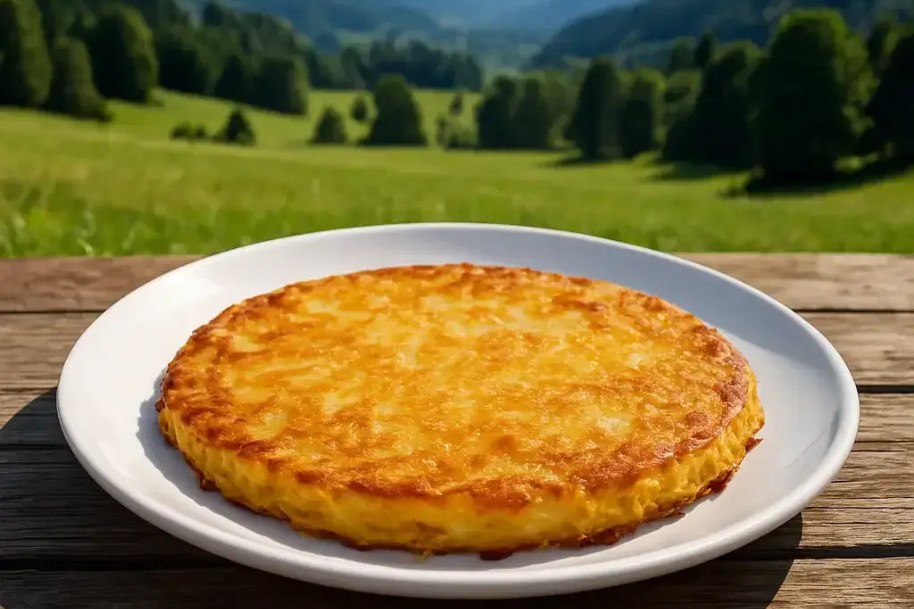

Kartoffel Rösti

| 1 kg große Kartoffeln, festkochend |
| 2 Zwiebeln, mittelgroß |
| 2 Eier |
| 2 EL Butterschmalz |
| 1 Prise Salz |
Zubereitung
Die Kartoffeln schälen und auf der Gemüseraffel reiben, würzen. Die Bratbutter in einer Bratpfanne erhitzen.
Die Kartoffeln zufügen und unter mehrmaligem Wenden leicht anbraten, damit die Streifen gleichmässig angebraten werden.
Zu einem Kuchen formen und zugedeckt 5 Minuten bei mittlerer Hitze braten. Den Röstikuchen wenden, die Butter am Rand verteilen, nochmals 5 Minuten ungedeckt goldgelb braten.
Rezept erstellt von
 Marvin
Marvin